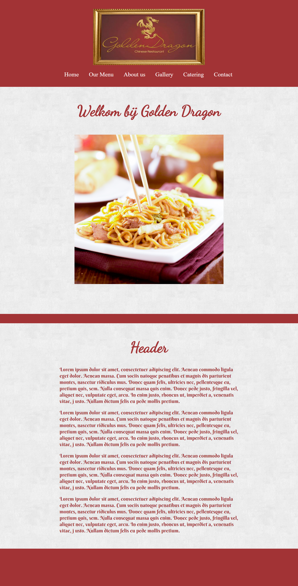

Op deze pagina staan projecten waaraan ik gewerkt heb. Deze pagina is incompleet omdat ik door een kappote harde schijf veel materiaal ben kwijtgeraakt.
Bij dit project moesten we een website maken voor een restaurant en daarbij een lijst van eisen en wensen volgen. Deze website kreeg uiteindelijk een 9.
Dit is de tweede toets van photoshop. Van losse afbeeldingen moest een voorbeeld worden nagemaakt. Het cijfer voor deze toets was een 9.